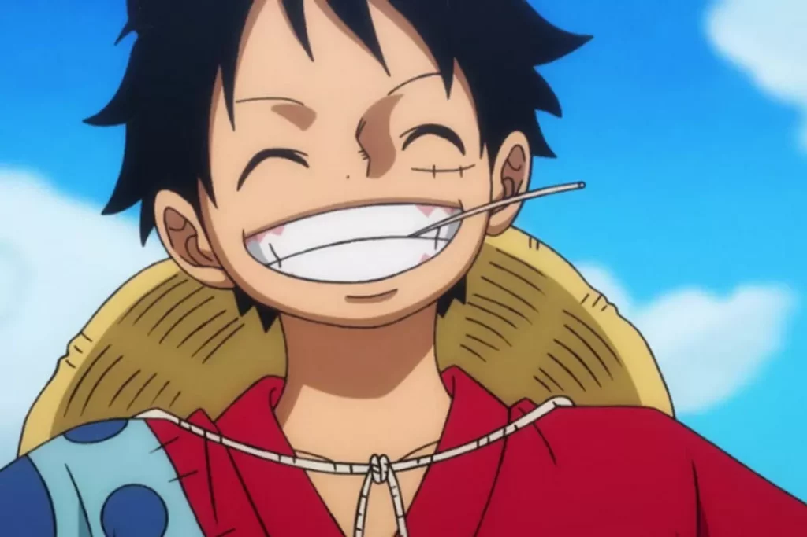
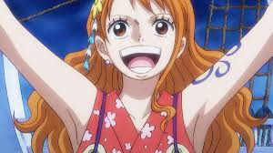
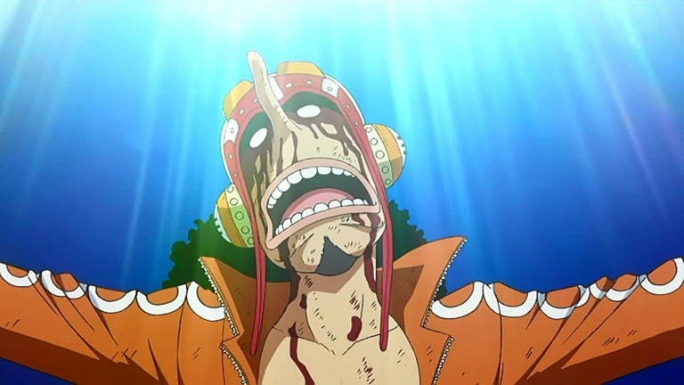
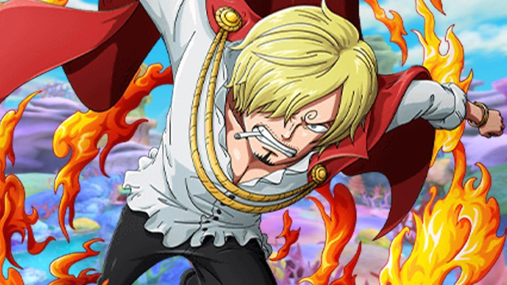

TP03 - Listas
Catalina Petasny
1.1- ¿Para qué sirve la etiqueta ul? Dar un ejemplo en donde lo utilizarías.
R: La etiqueta ul sirve para hacer una lista desordenada. La utilizaria al momento de hacer una lista de
nombres.
1.2- ¿Para qué sirve la etiqueta ol? Dar un ejemplo en donde lo utilizarías.
R: La etiqueta ol sirve para hacer una lista ordenada, la utilizaria al momento en el que tenga que hacer una
receta.
1.3- ¿Para qué sirve la etiqueta dl? Dar un ejemplo en donde lo utilizarías.
R: La etiqueta dl sirve para hacer listas descriptivas y son útiles a la hora de organizar definiciones. La
utilizaria cuando tenga que hacer una lista descriptiva de un personaje.
1.4- ¿Para qué sirve la etiqueta li? Dar un ejemplo en donde lo utilizarías.
R: La etiqueta li sirve para declarar cada uno de los elementos de una lista
1.5- Crea una lista desordenada con tres elementos (li) que contengan nombres de países de América del Sur.
R:
- Argentina
- Uruguay
- Colombia
1.6- Crea una lista ordenada con cinco elementos (li) que contengan los días de la semana en orden alfabético.
R:
- Lunes
- Martes
- Miercoles
- Jueves
- Viernes
1.7- Anida una lista desordenada dentro de otro elemento li de otra lista desordenada para crear una lista
anidada de frutas y verduras.
-
Frutas
- Banana
- Kiwi
- Manzana
- Frutilla
- Cereza
- Ananá
-
Verduras
- Tomate
- Papa
- Zanahoria
- Lechuga
- Espinaca
- Acelga
1.8- Crea una lista ordenada, respetando las negritas y el subrayado, que contenga los siguientes pasos para
hacer una tarta de manzana: a. Pelar y cortar las manzanas en rodajas finas. b. Mezclar la canela, el azúcar y
la harina en un tazón. c. Colocar la masa de la tarta en un molde para horno. d. Colocar las manzanas sobre la
masa de la tarta. e. Hornear la tarta durante 45 minutos.
- Pelar y cortar las manzanas en rodajas finas
- Mezclar la canela, el azúcar y la harina en un tazón.
- Colocar la masa de la tarta en un molde para horno.
- Colocar las manzanas sobre la masa de la tarta.
- Hornear la tarta durante 45 minutos.
1.9- Existe un atributo que se aplica a la etiqueta ol para ver la lista en orden descendente en vez de
ascendente, ¿cuál es ese atributo? Utilizar la referencia de atributos de HTML
https://developer.mozilla.org/es/docs/Web/HTML/Attributes
R: El atributo que se aplica a la etiqueta ol para ver la lista en orden descendente en vez de ascendente es el
atributo "reversed"
1.10- Utilizando el atributo anterior, crear una lista con cuatro elementos que contengan nombres de películas
de terror de forma descendente.
- El conjuro
- El exorcista
- Anabelle
- IT
- La Monja
1.11 Elegir un gusto particular y realizar una lista descriptiva de por lo menos 5 elementos. El título debe
tener un enlace que lleve a un sitio de referencia. Utilizar en las descripciones etiquetas: strong, em, img.
Personajes de One Piece
- Monkey D. Luffy
-

Monkey D. Luffy es el protagonista de el Anime japones One Piece.
Es el capitán de los Piratas de Sombrero de Paja y tiene el poder de estirarse
como goma gracias a la Fruta del Diablo Gomu Gomu". Su sueño
es encontrar el tesoro One Piece y convertirse en el Rey de los Piratas.
Actualmente, su recompensa es de 3.000.000.000 berries.
- Roronoa Zoro:
-

Roronoa Zoro es el espadachín principal y vicecapitán de los Piratas de Sombrero de Paja.
Maneja tres espadas con su estilo de combate Santoryu y sueña con ser el mejor espadachín
del mundo.
Se unió a Luffy para cumplir una promesa a su amiga de la infancia, Kuina
Antes de unirse a la tripulación era un cazarrecompensas y actualmente, siendo pirata tiene una
recompensa de 1.100.001.100 berries.
- Nami
-

Nami es la navegante de los Sombrero de Paja. Inicialmente se unió a la tripulación
para robarles y liberar a su aldea de su dictador Arlong, pero se conviertió en
un miembro oficial después de que Luffy derrotara a Arlong. Es conocida como la
"Gata Ladrona" y tiene una recompensa de 366,000,000 berries.
- Usopp
-

Usopp es el francotirador de los sombrero de Paja. Es conocido por
su valentía y habilidades de francotirador, aunque a menudo muestra una personalidad de cobarde. Su
sueño
es conviertirse en un valiente guerrero del mar, siguiendo los pasos de su padre
Yasopp
Actualmente, tiene una recompensa de 500,000,000 berries.
- Sanji
-

Sanji es el cocinero de los Sombrero de Paja, Su sueño es encontrar el mar All Blue
Es famoso por su habilidad culinaria y su destreza en combate, usando principalmente sus piernas
Es el tercer hijo de la familia Vinsmoke y proviene del Reino de Germa.
Su recompensa actual es de 1.032.000.000 berries.
Enlace de referencia